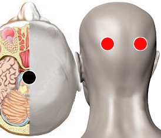

Depresión aguda
Pares
pineal - hipotálamo
pineal - hipófisis
bulbo - axila
mastoides - hipófisis
mastoides - riñón
parótida - parótida
pre pineal - post pineal
piso orbital - cerebelo
maxilar (sup) - cola de pancreas

Generalidades:
La depresión paraliza a la persona. Falta de sentido de la vida, falta de ánimo, abandono de sí mismo, pesimismo, pensamientos suicidas, odio, culpa, rencor. Puede ser crónica por causas bioquímicas o causada por factores externos: pérdidas, duelos, frustración, abuso de drogas...